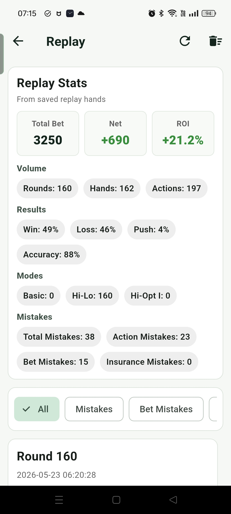
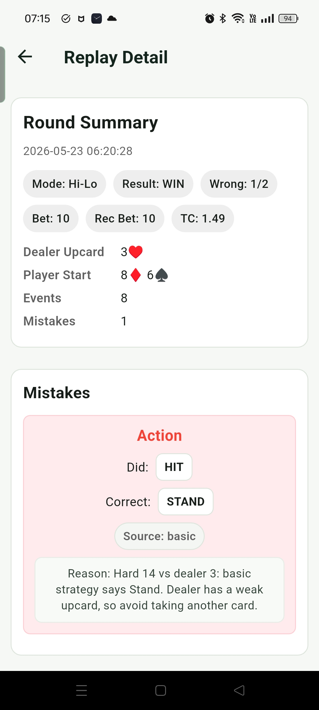
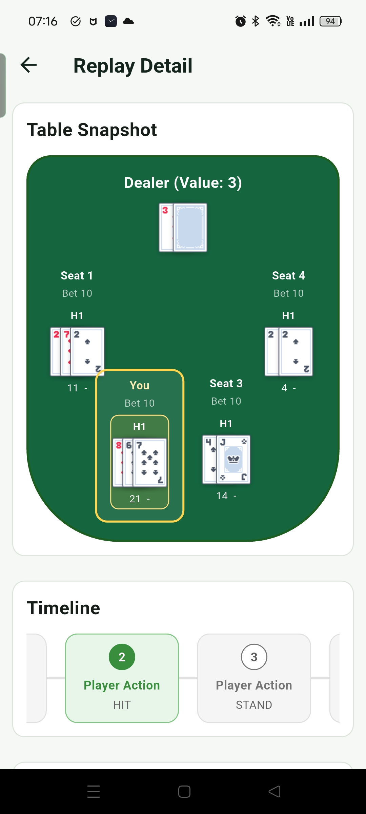
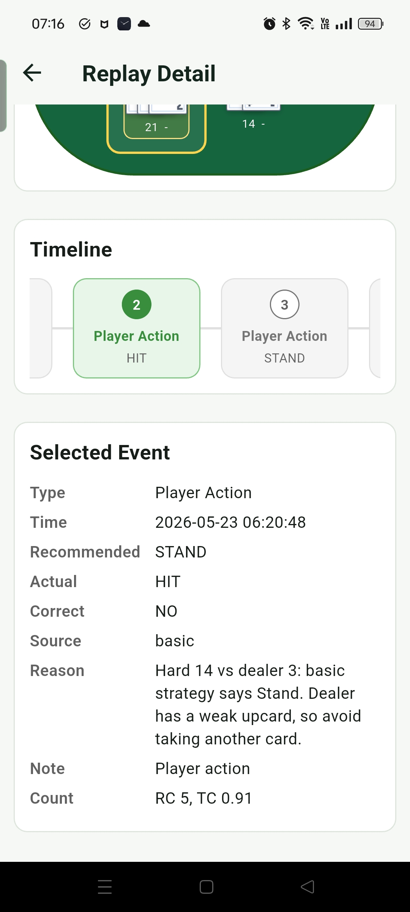

回放 Replay 讓使用者回看過去的 game 紀錄，從整體統計、錯誤篩選，到每一步決策細節都能重新檢查。 遊玩紀錄與篩選  Replay 首頁會統計目前的 game 遊玩紀錄，並可用 All、Mistakes、Bet Mistakes、Action Mistakes、Insurance Mistakes 篩選。往下滑可以看到過去 round 的紀錄，並點進去查看細節。 詳細回放  詳細回放頁會顯示 Summary，並整理這一局出現過的錯誤，方便快速了解問題集中在哪些決策上。  Timeline 可以逐步查看先前的決策過程，上方的 Table Snapshot 會呈現當下牌桌狀態。  Selected Event 會顯示 Timeline 當下事件的詳細內容，包含該次決策、結果與相關判斷資訊。